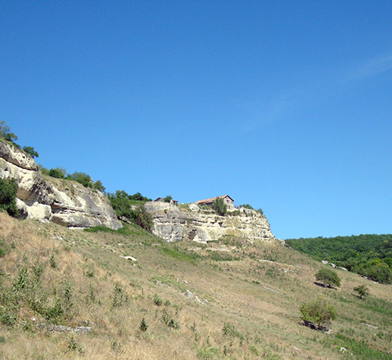

-
Посетить на въезде
Крымский мост -
Посетить на въезде
Парк львов Тайган -
Из Ялты
Никитский ботанический сад -
Из Ялты
Гора Ай-Петри -
Из Ялты
Воронцовский дворец -
Из Ялты
Ливадийский дворец -
Из Ялты
Массандровский дворец -
Из Севастополя
Севастополь -
Из Севастополя
Бахчисарай. Чуфут-Кале -
Из Севастополя
Бахчисарай. Ханский дворец -
Из Севастополя
Балаклава -
Из Севастополя
Мыс Фиолент
Фотоотчет
-
Крымский мост
-

Один из крупнейших мостов в России. Он состоит из параллельно расположенных автомобильной и железнодорожной трасс. Его протяженность - 19 км. Трасса начинается на Таманском полуострове, проходит по существующей 5-километровой дамбе и острову Тузла. Затем пересекает Керченский пролив, огибая с севера мыс Ак-Бурун, и выходит на крымский берег. Источник: Проект Крымский мост
-
Парк львов Тайган
-
Крупнейший в Европе питомник львов и других видов животных, в основном крупных млекопитающих. На данный момент на территории парка площадью более чем 30 гектаров, свободно проживает около 60 львов, 40 тигров, а также сотни других животных. Источник: Парк львов Тайган (сайт)
-
Никитский ботанический сад
-
Никитский ботанический сад основан в 1812 году и является одним из старейших научно-исследовательских учреждений нашей страны. Основатель Сада - видный ученый-биолог XIX века Христиан Христианович Стевен. Источник: Никитский ботанический сад (сайт)
-
Гора Ай-Петри
-
В административном отношении относится к Ялтинскому городскому округу Крыма. Высота горы 1234 м. Различают Главную (1234 м), Западную и Восточную (1100 м) вершины Ай-Петри. Силуэт горы завершает линию живописного амфитеатра от самого моря — мыса Ай-Тодор с Ласточкиным гнездом — до знаменитых фигурных зубцов. Зубцы Ай-Петри состоят из четырех крупных (высотой 60-80 м) и ряда мелких выступов на гребне, образовавшихся при выветривании неоднородных рифовых известняков. Источник: wikipedia
-
Воронцовский дворец
-
Дворцовый комплекс Воронцовского дворца в Алупке, состоящий из пяти строений, сооружен в 1828-1848 гг. по проекту английского архитектора Эдуарда Блора (1789-1879) для генерал-губернатора Новороссийского края графа М.С. Воронцова (1782- 1856). Парадные залы дворца, оформленные в стиле традиционного английского интерьера, почти полностью сохранили свою первоначальную отделку. Неповторимое своеобразие Голубой гостиной придает тончайший лепной орнамент из цветов и листьев. Декоративное оформление Вестибюля и Парадной столовой напоминает убранство рыцарских залов в средневековых замках. В Зимнем саду от старых растений сохранился вьющийся по стенам фикус-репенс. В залах экспонируются картины и скульптура русских и западноевропейских мастеров, различные предметы декоративно-прикладного искусства. Источник: Воронцовский дворец
-
Ливадийский дворец
-
Ливадийский дворец в Крыму — последнее сооружение Российской Империи, созданное для семейства Романовых, — настоящее сокровище Южного берега. Это место, где черпали вдохновение поэты, композиторы и художники. Место, которое невозможно не посетить, путешествуя по Крыму. В разное время гостями дворца были видные мировые политики и деятели искусств, неоднократно он принимал в своих стенах конференции и встречи международного уровня. Неудивительно, что именно это место стало свидетелем многих поворотных моментов истории. Источник: wikipedia
-
Массандровский дворец
-

Масса́ндровский дворе́ц императора Александра III расположен в Верхней Массандре на Южном берегу Крыма. Ныне это дворец-музей — филиал Алупкинского дворцово-паркового музея-заповедника. Источник: wikipedia
-
Севастополь
-
Севастополь — это город с многовековой историей, который расположен в юго-западной части Крыма непосредственно у берега Черного моря, береговая линия которого составляет 106 километров. Основные исторические достопримечательности расположены в южной части Севастопольской бухты. Источник: Турристический портал Крыма
-
Чуфут-Кале
-

Чуфу́т-Кале́ — средневековый город-крепость в Крыму, расположен на территории Бахчисарайского района в 2,5 км к востоку от Бахчисарая. Источник: wikipedia
Прикосновение к истории происходит явное. Ни тяжелый подъем, ни время потраченное на отдаленную от цивилизации достопримечательность не повлияют на ваше восхищение на вид, который откроется вам, когда вы достигнете вершины. Вид на Каньон, открывшийся перед вашими глазами, заставит вас забыть о многом и напомнит о суете земного. Красота и мощь природы, величие ее откроются вам мгновенно, лишь только вы отвернетесь от пещерного города. Незабываемые чувства вам гарантированы.
Отзыв leis2013 о пещерном городе Чуфут-Кале -
Ханский дворец
-
Крымский полуостров по достоинству славится своими историческими памятниками, каждый из которых бесценен и неповторим. Однако античные руины, средневековые крепости, пещерные монастыри и приморские парки можно увидеть и за пределами полуострова. Но что касается крымско-татарских дворцов, то в мире можно найти лишь один единственный – Ханский дворец в городе Бахчисарай. Источник: Турристический портал Крыма
-
Балаклава - одно из красивейших мест в Крыму
-
Балаклавская бухта — одна из самых удобных бухт на Чёрном море для швартовки кораблей, бывшая база подводных лодок, она узкая (200—400 м) и глубокая (до 17 м), в ней не бывает штормов. При входе в бухту скалистый берег делает несколько поворотов, поэтому со стороны открытого моря гавань вообще не видна. Источник: wikipedia
-
Мыс Фиолент
-
Мыс Фиолент находится недалеко от Севастополя, нужно немного проехать за город.
Душа разворачивается от ощущения простора вокруг, когда стоишь на крайнем выступе (первое фото в галерее). Очень портит впечатление современная застройка (отели с баннером "продам"), ощущение как будто прервали чудесный сон. Но как только повернешься к берегу спиной, опять накрывает ощущение пространства, простора, полета!
Лучше приезжать под вечер, за 30-40 минут до заката, получатся отличные фото. Мы приехали рано, задолго до заката, пришлось довольствоваться фото морского пейзажа с солнышком, спрятавшимся за плотным облаком (почти закат :). Немного жаль, но есть повод вернуться!